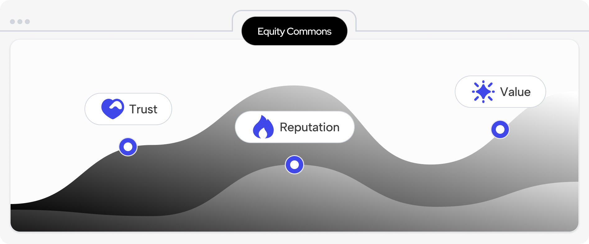
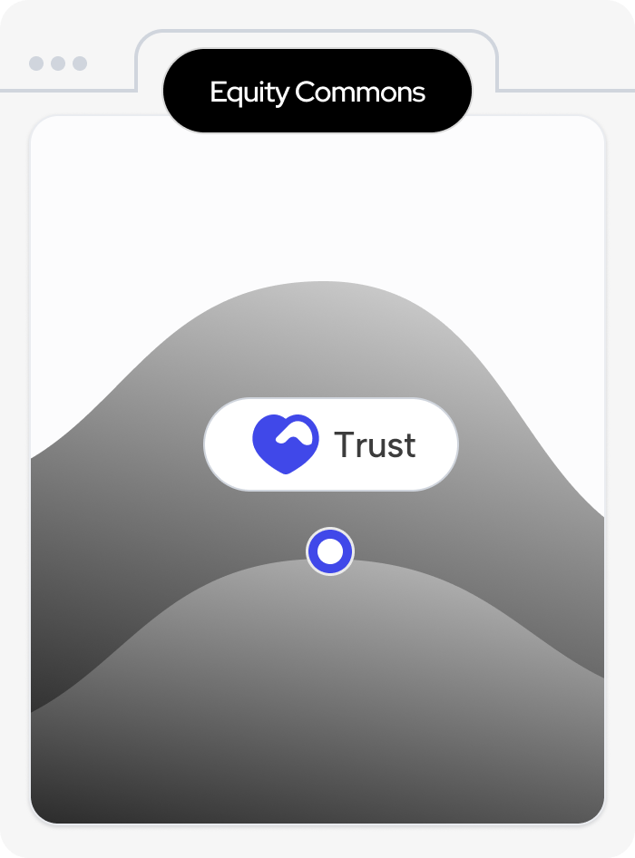
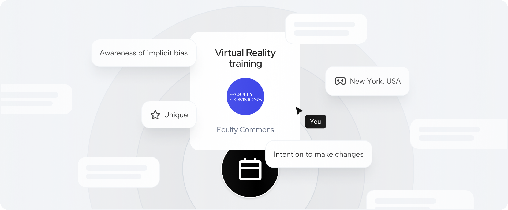
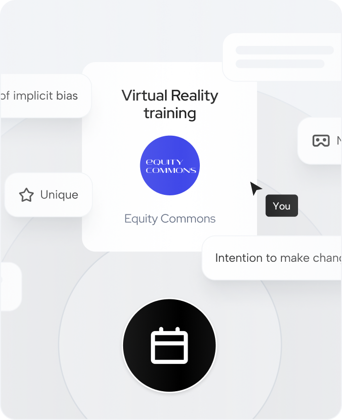

25.7734° N, 80.1902° W
I proposed the idea of launching the Outcomes Page to stakeholders to enhance Equity Commons' transparency and impact storytelling. Recognizing the need for a clear, data-driven way to showcase the organization's progress, I led the initiative from concept to execution. The Outcomes Page has been built and is currently live, providing stakeholders with valuable insights into the organization's impact.
As the creative lead and UX writer, I defined the vision and structure of each Outcomes Page section, ensuring the communication of key results while maintaining an engaging user experience.
2
4 weeks
UX/UI Designer
In close collaboration with the Web Designer, I guided the design process to align with Equity Commons’ brand and user needs, resulting in a seamless and visually compelling page.
Bringing the Outcomes Page to life was a multi-stage process that required strategic planning, stakeholder alignment, and iterative design refinement to ensure it effectively demonstrated our expertise, quantified results, and encouraged engagement.
Stakeholder Proposal & Securing Buy-In
Recognizing the need for a structured, data-driven way to communicate Equity Commons’ impact, I proposed the Outcomes Page as a solution to stakeholders. My goal was to enhance transparency and credibility by summarizing our proven training outcomes while reinforcing Equity Commons' thought leadership in the space.
In my proposal presentation, I identified gaps in how we conveyed success stories and demonstrated how a dedicated Outcomes Page could establish trust, showcase quantifiable results, and highlight Whitney & Dr. Grant’s industry reputation. Using research-backed insights, user behavior analysis, and competitor benchmarks, I effectively communicated the value of this initiative, securing alignment and approval.
 Stakeholder Proposal & Securing Buy-In
Once approved, I took the lead in defining the structure, content hierarchy, and visual direction of the page, ensuring a balance between data-driven insights and compelling storytelling. My approach focused on:
Working closely with the Web Designer, we refined the navigation, content layout, and visual elements across several rounds of feedback. This iterative process ensured each section—from case study breakdowns to news highlights and press mentions—effectively engaged users while maintaining brand consistency.
 Finalizing for Execution
After extensive refinements and stakeholder reviews, we finalized the Outcomes Page for development and launch. By meticulously shaping the design and messaging, we ensured that the final product wasn’t just an informative webpage but a strategic tool for:

Equity Commons had valuable data but lacked a clear, engaging way to present it. Seeing this gap, I proposed the Outcomes Page to improve accessibility and stakeholder understanding.
Communicating new ideas comes with uncertainty, but I tackled it with confidence. This experience reaffirmed that great product management means spotting opportunities, advocating for users, and driving impactful solutions.